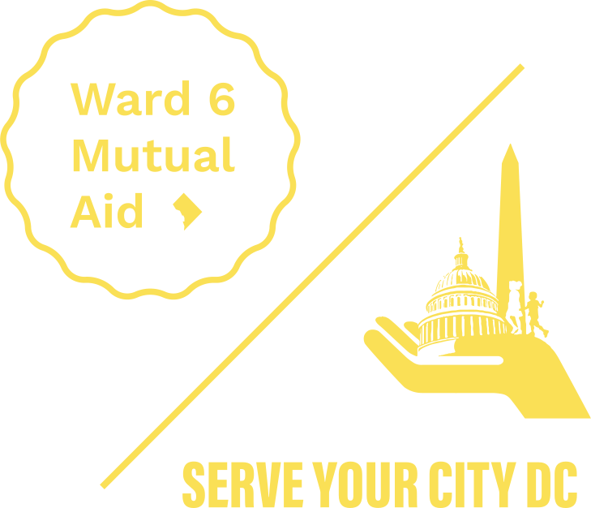

What is the Back to School Bash?
On Thursday, July 30th, Mayor Bowser and Chancellor Ferebee announced that DCPS will be all-virtual until at least November 6th. Despite this announcement, neither the Mayor nor the Chancellor committed to ensuring that every student will be provided with the resources that they need to be successful - and in fact estimated that 44% of students surveyed do not have access to a digital device. This is unacceptable.
That is why Serve Your City and the Ward-6 Mutual Aid Network have created the We Keep Us Safe Back to School Bash, in order to make sure that ALL of our DC students are able to have the resources they need to be successful during the start of the school year. We will be providing students with backpacks that include a digital device, traditional school supplies, personal protective equipment, and some fun activities/surprises to add some back-to-school joy!
How can you help?
Become a sponsor at the highest level you are able to ensure that more kids have the opportunity and access to the items they need to succeed during distance learning or hybrid school-opening models.
Who is Serve Your City/Ward 6 Mutual Aid?
Serve Your City’s mission is to provide life-changing experiences and opportunities for under-resourced Washington, D.C. students. It aims to make sure Black and Brown students receive the same opportunities their white counterparts receive. Given the health emergency, SYC immediately shifted its focus to ensuring that its students and the communities they live in have the resources needed to weather the pandemic and combat the systems that created the crisis.
In response to the COVID-19 pandemic, SYC co-created the DC Mutual Aid Network, which is the central and only mutual aid network in the city serving Wards 5, 6, 7, and 8; and is acting as the lead organizer for mutual aid in Ward 6. The DC Mutual Aid Network is a community-led effort to safely support community members hardest hit by the pandemic. The network is a grassroots, trauma-informed response to the pandemic for the most vulnerable and under-resourced communities in Washington DC. Members of these communities are disproportionately African Americans, People of Color, and those who have recently immigrated to the United States, and bear the burden of systemic poverty, racism, and environmental injustice. The mutual aid network is providing life-saving supplies, food, and PPE.
Learn More about our Impact

 Student 1 backpack $250social media thank you
Student 1 backpack $250social media thank you Family 4 backpacks $1000social media + newsletter thank you
Family 4 backpacks $1000social media + newsletter thank you Classroom 20 backpacks $5000all above + banner at event
Classroom 20 backpacks $5000all above + banner at event Grade 50 backpacks $12,500all above + “presenting sponsor” on banner
Grade 50 backpacks $12,500all above + “presenting sponsor” on banner School 100 backpacks $25,000all above + “partnering sponsor” on banner & in press; logo on all material
School 100 backpacks $25,000all above + “partnering sponsor” on banner & in press; logo on all material